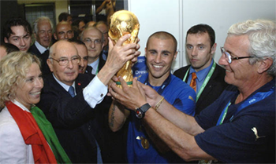

Футбол
Футбол — командный вид спорта, в котором целью является забить мяч в ворота соперника ногами или другими
частями тела(кроме рук) большее количество раз, чем команда соперника.
Есть 17 официальных правил игры,
каждое из которых содержит список оговорок и руководящих принципов. Эти правила предназначены для применения
на всех уровнях футбола, хотя есть некоторые изменения для таких групп, как юниоры, взрослые, женщины и люди
с ограниченными физическими возможностями. Законы очень часто формулировались в общих чертах, которые
позволяют упростить их применения в зависимости от характера игры.